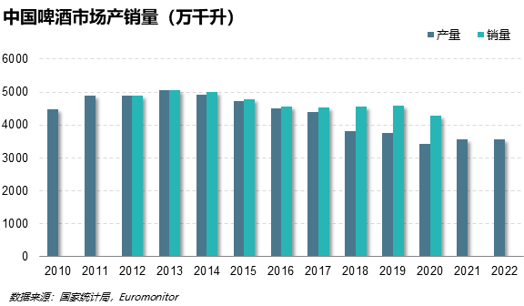
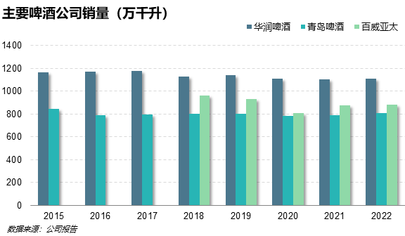
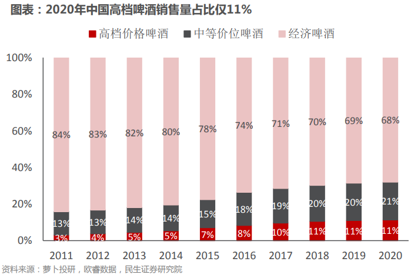
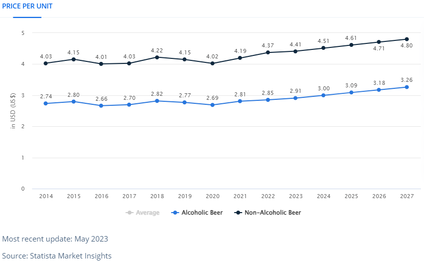
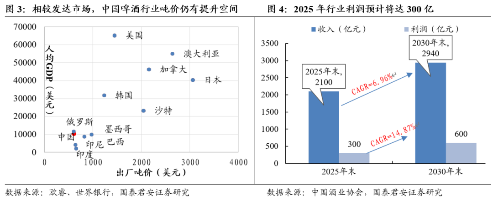
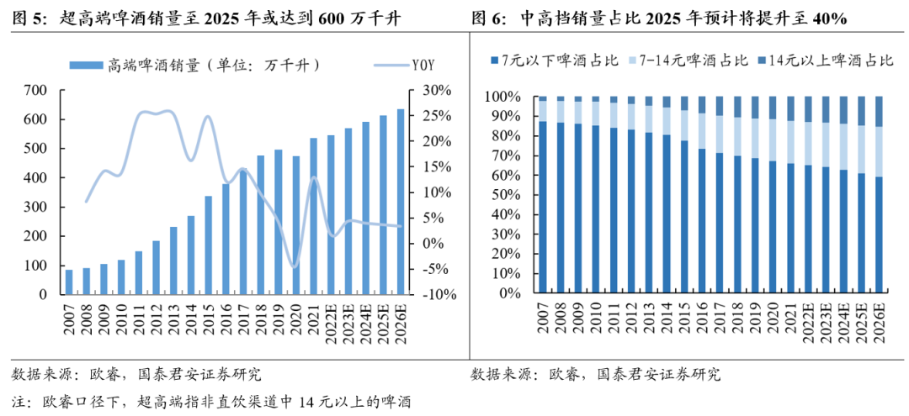
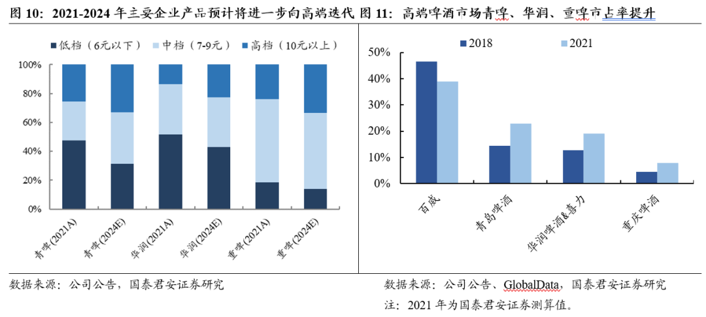

中国啤酒市场的基本情景假设
FACT_1:
2013年是中国啤酒行业的产销顶峰，改革开放以来至2013年是行业稳步扩张的时期，而在2013年达到销量顶峰之后，中国啤酒行业就进入了下降周期，尽管2021年和2022年产量微增，但对比2013年，行业容量已减小近30%。

ANALYSIS_1:
我们可以在公开渠道找到很多关于市场整体趋势变化的分析，比如中国20至49岁的人口（啤酒主流目标消费群体），无论是总数还是占比基本上都是从2013年开始下滑的，再比如随着人均收入和生活质量的提高，主流消费人群消费观念的变化等等。
FACT_1 & ANALYSIS_1 => SCENARIO_1:
总之，中国啤酒行业已进入“存量市场”是不争的事实，未来也很难再有销量上的突破。
FACT_2:
主要上市公司历年的销量变化基本也与行业整体一致。

FACT_3:
另一方面，中国啤酒市场在结构上出现了明显的消费升级趋势。尽管消费总量在下降，但单位价格却持续上升，程度甚至抵消了总量的下降，因而进一步带动了整体销售收入的增长。根据欧睿咨询的市场调研数据，中国啤酒市场的中高端产品销量占比已经由2013年的19%上升至2020年的32%。

ANALYSIS_2:
显然，消费者正在逐渐抛弃低端产品，转而追逐品质、口味更高且个性化更丰富的中高端产品。当然，回顾历史我们可以发现，这样的发展模式并不陌生，无论是美国还是日本，随着人均收入或者人均GDP的增长，啤酒的单位消费价格都跟随上涨。横向来看，不同国家之间的人均GDP确实也与啤酒的单位价格呈现出显著的正相关关系。



FACT_3 & ANALYSIS_2 => SCENARIO_2:
可见，行业整体向高端化发展也是一个长期叙事中的主要逻辑。
ANALYSIS_3:
对于行业中的主要参与企业而言，是否可能出现个别公司，在未来的行业发展中进一步大幅扩张市场份额（不包括并购）？这种可能性并不大。首先行业的集中度已经不低，其次产品差异化程度不高，而且竞争带有强烈的地域属性。
FACT_2 & ANALYSIS_3 => SCENARIO_3:
更有可能的情况是，龙头企业依然维持领先的市场份额，同时引领行业整体向高端化方向发展。这一点在过去数年的数据中也得到了印证，各家龙头企业的销量似乎都遇到了瓶颈，而销售的单位价格在平稳提升。

SCENARIO_1 & SCENARIO_2 & SCENARIO_3 => SCENARIO_4:
因而对于主要的啤酒生产企业来说，在啤酒销量趋于稳定的情况下，最核心的经营目标即在于，通过高端化来改善利润表现。
ANALYSIS_4:
所谓产品的高端化发展，主要是指整体定价的上移。对于可比较的上市啤酒公司，可以用“收入/销量”来大致衡量产品定价的差异。但需要注意的是，各家公司的财务口径并非完全一致，其中对于税务、补贴、经销等方面的会计处理可能完全不同，另外上市公司的收入中也可能包括非啤酒类的销售，因而这种对比并非全面且准确，但大体上可以反映不同公司之间产品定价的差异。
然而定价高并非一定带来更高的利润，还有其他的因素制约着转化能力，主要包括成本、营销以及管理。尽管在同样的生产水平下，高端产品的生产成本总是要高于低端产品的，但以最终的销售价格来看，定价的差异是远远超过于成本的，因而随着高端产品占比的上升，经营毛利率也有同步上行的趋势。
销售费用的支出则更加复杂。一般而言，市场营销的作用，其一是为了促进原有产品的销量，其二是用来打造品牌以提升或维持中高端产品的价格。以供需法则来讲，提价（高端化）必然会不利于销量，而销量下滑对盈利基数和规模经济都会造成负面的影响。因而更一般的做法是多品牌运营，形成价格歧视。更多的品牌则意味着更高的管理费用、营销费用以及经销费用，可见成功的产品高端化发展是多方面合力形成的结果，因而评判高端化效果的标准不应该仅仅是产品的定价，而应该是剔除高端化的负面影响后，经营利润是否仍有正面的提升。
FACT_4:
下表是对于主要的上市啤酒公司的经营数据总结（采用的是2022年度数据，部分有估算，单位是亿人民币/百万千升，市值数据更新于2023年6月27日），最后两列需要格外关注。
| 收入/销量 | 毛销/销量 | EBIT/销量 | 市值/销量 | |
|---|---|---|---|---|
| 青岛啤酒 | 39.87 | 6.52 | 4.62 | 172.41 |
| 华润啤酒 | 31.78 | 6.14 | 3.15 | 131.56 |
| 燕京啤酒 | 35.02 | 5.72 | 1.34 | 93.90 |
| 惠泉啤酒 | 28.28 | 3.54 | 0.84 | 137.85 |
| 重庆啤酒 | 49.15 | 13.44 | 11.18 | 164.27 |
| 百威亚太 | 50.49 | 16.28 | 8.73 | 275.03 |
| 百威英博 | 66.99 | 21.26 | 16.14 | 131.51 |
| 喜力 | 82.45 | 28.95 | 12.31 | 154.21 |
| 嘉士伯 | 55.62 | 11.66 | 8.31 | 124.73 |
| 摩森康胜 | 89.71 | 22.26 | 8.69 | 119.05 |
ANALYSIS_5:
首先是“EBIT/销量”，可以作为衡量高端化策略最终效果的代理指标，当然同样由于财务口径的问题，这里的对比并非完全准确，只作大致的参考。可以看到，在本土公司中，作为嘉士伯控股子公司的重庆啤酒实现了较为成功的高端化运营，无论是单位价格还是单位利润都远超其他公司，利润方面甚至好于母公司嘉士伯。需要注意的是，中高端产品在中国市场的占比仍然不高，因而从绝对销量来看，重庆啤酒相较于龙头公司仍有较大差距，在仍然增长的中高端市场中也面临着激烈的竞争。其他本土公司中，青岛啤酒在单位利润上最具优势，一方面青岛啤酒是本土品牌中最早开启高端化运营的公司，具有先发优势，另一方面青岛啤酒也是管理效率最高的啤酒公司，最有效地实现了管理成本的控制。
海外公司的发展已然较为成熟，均以中高端产品的运营为主，尽管定价有所差异，但最终实现的单位利润水平却比较接近。或许是出于规模经济的影响，单位利润的高低排序基本与各家公司的销量排序一致，平均来看大致处于10至12亿人民币/百万千升的水平。
SCENARIO_4 & FACT_4 & ANALYSIS_5 => SCENARIO_5:
这一点对于中国公司来讲有一定的借鉴意义，也就是说，按照青岛啤酒和华润啤酒当前的发展，如果此后成功实现了高端化的转型策略，那么在单位利润方面应该还有3至4倍的增长空间。
ANALYSIS_6:
接下来是“市值/销量”，这是一个衡量全球投资者对于类似的啤酒公司定价高低的指标。从表格上可以看出，尽管各家公司于全球不同的交易所上市，但整体上的定价规律却有迹可循，绝大部分公司的估值处于130至170亿人民币/百万千升之间，可见全球投资者对于啤酒类上市公司的定价还是有很强的一致性的。
SCENARIO_4 & FACT_4 & ANALYSIS_6 => SCENARIO_6:
然而从另一个方面看，由于高端化发展并不能突破销售量的瓶颈，那么以当前的定价而言，尽管单位利润水平仍然较低，但青岛啤酒与华润啤酒的高端化转型成果已然被反映于价格的预期之中了。
在投资的两个视角中，价值评估方面显然啤酒类上市公司还没有满足标准，那么只能在价格驱动因素方面寻找机会。中国啤酒公司的高端化转型是一个中长期的正向商业逻辑，大概率是一个交易消费类大行业的高beta潜在标的。至于具体的价格相关性指标，则留待专门的驱动因素分析了。∎